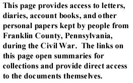

|
 |
To search select personal papers by keyword, author, or subject,
go to the letters or diaries search pages.
When the war began, Henry Bitner and his friends Alex "Ellic" Cressler, David Daihl, Thaddeus "Thad" Donely, William Kindig, William Martin, and David Shoemaker were mostly young men still living with their parents and siblings in Southampton, Franklin County, Pennsylvania. Of Bitner's correspondents, all but Cressler served in the Union army during the war, in either the 130th Pennsylvania, 77th Pennsylvania, 170th Pennsylvania, or 11th Ohio. In their wartime letters (1861-1863), Bitner's correspondents described their wartime experiences. At least three of them survived the war, but at least one did not.
George W. Brewer remained in Chambersburg during the war, where he made a living as an attorney. Four wartime letters (1864) in the collection of George W. Brewer concern a soldier's life and the burning of Chambersburg. You may also read his postwar letters (1867-1869).
Simon Cameron was the United States Secretary of War during the first year of war. In the aftermath of the Confederate sacking of Chambersburg, Cameron writes a letter on August 1, 1864 to President Lincoln requesting that he remove the department commander. Cameron also reports on the extent of the damage to the town.
Enlisting while in his mid-twenties, James Carman served as a lieutenant in 107th Pennsylvania Volunteers during the war. Two of Carman's letters to his father describe camp conditions, troop movements, battles, and Carman's own difficult decisions about staying in the army. In one letter, July 18, 1862, James Carman wrote to his father, Martin W. Carman, regarding expectations of an upcoming approach to Richmond, the conduct of the war, his decision not to resign from the army, and differences in attitudes toward the war between urban and rural Virginians. In another letter, December 17, 1862, Carman wrote to his father about the Battle of Fredericksburg, the lateness of his pay, and his desire to resign from the army.
Jeremiah T. Cooper worked as a shoemaker in Waynesboro, Franklin County, Pennsylvania, when the war began. He served in the 77th Pennsylvania, having enlisted in 1861 when he was 21 years old. In this wartime letter (1862) to Lt. George D. Schott, Cooper writes about his injuries and about the possible deaths of other soldiers in a recent battle.
Samuel Cormany was a native of Franklin County, Pennsylvania. Samuel brought his bride, Rachel, to Chambersburg in August 1862. Soon after, Samuel enlisted in the 16th Pennsylvania Cavalry, leaving his wife in the care of his relatives. The diaries of Samuel and Rachel Cormany tell about his life on the battlefield and hers on the homefront during the war in Franklin County. The excerpt from Samuel's wartime diary (1863) provides a graphic account of an officer's participation in the battle of Gettysburg. The excerpt from Rachel's wartime diary (1863) documents in vivid detail a woman's life at home, including her frequent complaints of boredom and depression.
Milton Crawford enlisted in the Union army in February 1864 and served until the end of the war. In this wartime letter (1865) to his parents, Crawford writes about life at Appomattox Station, Virginia, after the surrender of Confederate forces. He also mentions the destitution of the local people in Virginia and the scarcity of postage stamps.
Rev. Thomas Creigh of the Presbyterian Church in Mercersburg, Pennsylvania, kept a diary of his wartime experiences. In this paper (1940) read before the Kittochtinny Historical Society, Rev. J. D. Edmiston Turner included several excerpts from Rev. Creigh's diary, which describes the Confederate invasions of Pennsylvania and mentions the service of Creigh's sons in the Union army.
The Demuses and the Christys resided in Mercersburg, Franklin County, Pennsylvania. During the war, several of the Demus and the Christy men enlisted as soldiers in the 54th Massachusetts. The wartime letters (1863-1865) in this collection were written to and from Mary Jane Demus and John Christy, who remained in Mercersburg while their relatives fought in South Carolina, Florida, and Georgia. These letters offer valuable insight into the charge on Fort Wagner, the unequal pay of black soldiers, activities in camp and battle, and conditions on the homefront. You may also read the aftermath letters (1865) of the Demus and Christy families.
Seth Dickey enlisted in the 126th Pennsylvania on August 2, 1862. This paper (1981) read before the Kittochtinny Historical Society recounts Dickey's life as well as his participation in the battle of Fredericksburg. The author of the paper, Charles J. Stoner, included excerpts from Dickey's memoirs of his experience in the war.
A shopkeeper in Chambersburg's South Ward, William Heyser also supervised his family farm until he sold it in 1862. He remained in Chambersburg with his wife, adult children, and grandchildren until his death in 1863. William Heyser's wartime diary (1862-1863) provides insight into wartime life on the Franklin County home front.
A short collection of wartime letters (1863) written to Doctor Joseph Hiester, his wife, and Maria Hiester. The letters detail movements of Union troops and clashes with Confederate forces. The writer of most letters is H. W. Freedley, who suffers a leg wound at the battle of Gettysburg. Eventually Doctor Hiester arrives in Gettysburg to care for Freedley, and writes his wife to tell her of Freedley's condition.
Samuel Z. Maxwell, a plasterer from Chambersburg, served in the 126th Pennsylvania, the 182nd Pennsylvania, and the 21st Pennsylvania Cavalry. In this wartime letter (1863), written during his time with the 21st Pennsylvania Cavalry, Maxwell describes his life since joining the Union army, including his movements in Mechanicsburg, Carlisle, and Harrisburg. He also mentions the gubernatorial election in Pennsylvania and expresses his intention to vote for Andrew G. Curtin.
Thomas McCoy's detailed and extensive wartime letter (1862) to Adjutant General Russell and Governor Curtin describes his regiment's movements in northern Virginia leading up to the second battle of Manassas of August, 1862 and describes his regiment's heroic participation in the battle
Sylvester McElheney was a private in the 208th Pennsylvania and served from September 1864 through April 1865. His wartime letters (1864-1865) to his wife, Harriet, during this time reveal their struggle to maintain close ties while he was away in Virginia. His writings also provide a Union soldier's perspective on Virginia society and on the burning of Virginia homes in retaliation for the burning of Chambersburg. Two letters from Jacob Shearer and Frances Pleasants inform Harriet McElheney of her husband's wounding and eventual death in the service.
Anna Mellinger was the young wife of a Franklin County farmer. She kept this wartime diary (1864-1865) during the Confederate invasion and burning of Chambersburg. In it she describes how her religious faith sustained her during this invasion, and how her family struggled to continue farming in its aftermath.
Alexander K. McClure, an attorney and newspaperman, lived in Chambersburg in Franklin County, Pennsylvania. Active in politics, McClure maintained ties with a number of prominent politicians, as his correspondence with Abraham Lincoln and Eli Slifer, Secretary of the Commonwealth under Governor Andrew Gregg Curtin, indicates. These wartime letters were usually address to Eli Slifer and concerned political matters.
Samuel North was an 18-year-old tanner living with his family when he enlisted in the Union army. In these wartime letters (1862-1864) written to his family, North describes his life as a soldier in camp, on the march, and in battle.
In this wartime letter (1863), Pollock describes the beautiful and plentiful surroundings in Franklin county, the high morale of the Confederate troops and their reverence for Robert E. Lee. He also notes that he himself has seen no cases of looting or plundering in violation of Lee's orders
Franklin R. Rankin was born in Franklin County in 1834. During the war he enlisted in the 21st Pennsylvania Cavalry as a sergeant. This wartime diary (1864) is a record of his service during 1864 in what are at times very brief daily entries. His daily reports include updates on his regiment's movement toward Richmond and tallies of casualties incurred along the way.
Franklin Rosenbery served as a Union soldier during the war. In these wartime letters (1863-1864) he writes mostly to his father John Abraham Rosenbery, and occasionally to other family members. He describes in great detail his love of God and the Union.
Lauramann Howe Russell was not a native of Franklin County, Pennsylvania, but he resided in Chambersburg at the Academy Hospital for a short time during the war. Russell served in the 13th Massachusetts Volunteers as a physician. In these wartime letters (1862) to his daughters Serena and Ellen back home in Massachusetts, Russell describes the town and people of Chambersburg.
In this collection of four wartime letters (1862-1864), Benjamin S. Schneck wrote to his sister Margaretta S. Keller about his trip west through Ohio, rumors of a Confederate march into Pennsylvania in 1862, and the burning of Chambersburg in 1864. Though not listed in either the 1860 or 1870 census, Schneck lived in Chambersburg during the Civil War.
In this wartime letter of April 15, 1865, Charles Smith asks his commanding officer for leave to visit his family back in Chambersburg. This letter is of particular interest because Smith was a native of Augusta County, Virginia, who left there at the beginning of the war because of his Union sentiments. He describes his departure from Augusta County in an attempt to obtain special consideration in his request for leave.
In a letter on March 6, 1863, Smith describes camp life and remarks upon the terrible winter weather. He goes on to complain about the war's length, angrily questioning the motives of "rebels" and complaining about Virginia's terrain. Smith concludes by recounting a recent skirmish with "rebel" forces. He goes out of his way to mention seeing a "dead rebel." In another letter on March 22 1863 Smith asks his grandmother to send money and mentions a recent cavalry raid, noting that he missed it because he was on guard duty.
Thaddeus Stevens was born in Vermont in 1792, but spent most of his life in Pennsylvania. He purchased land in Franklin County and before the war was elected to Congress. He became known for his abolitionist views and for his outspoken refusal to end the war without ending slavery. This collection contains thirteen wartime letters (1861-1865) regarding various wartime concerns written to Stevens by Franklin County men. Correspondents include William E. Camp, Jr., John R. Agnew, William McLellan, W. Maxwell, W. H. McDowell, James Nill, W. Hammett, Alexander McClure, and C. S. Eyster.
The Stouffers were a devoutly religious family who lived in Guilford Township in Franklin County, Pennsylvania. In these ten wartime letters (1861-1865), members of the Stouffer family and their correspondents discuss religion, war, and crops. This collection also includes the wartime diary (1863) of Amos Stouffer and the wartime diary (1863) of Eliza R. Stouffer. You may also read one postwar letter (1865) in the Stouffer family collection.
William Tolbert worked for the Chief Engineer's Office of U. S. Military Railroads during the end of the war. In this small collection of wartime letters (1864-1865), William writes to his sister Emma, discussing general working conditions and some of the military units he has been working near while stationed in Tennessee and Mississippi.
George Traxler enlisted in the Union army in November 1861 in Chambersburg in his native Franklin County, Pennsylvania. Traxler's wartime diary (1864) describes his time in Libby prison and also at Belle Island and Salisbury, where he died Christmas day, 1864. In his diary, he recorded his daily meals and commented upon his health.
The additional personal papers collections include the letters and diaries of men and women who wrote about Franklin County or shared experiences with Franklin County individuals. Most of these collections were written by soldiers who served in regiments with Franklin County men and had similar military experiences. Other collections were written by visitors to Franklin, either soldiers or civilians, who commented upon conditions on the home front.